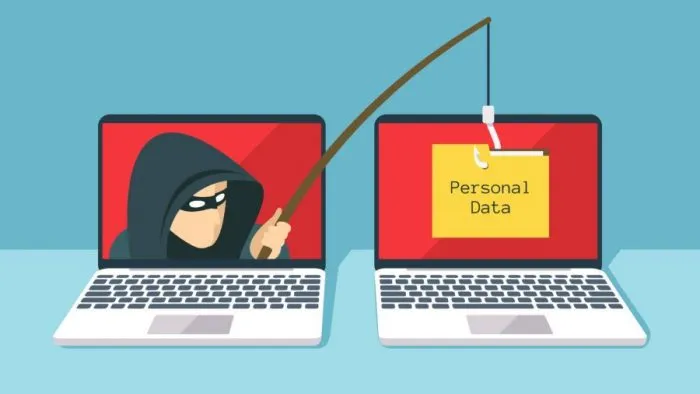

Spoofing
Última atualização: Outubro 1, 2023
Ataques de Spoofing: Como se Prevenir
Os ataques de spoofing são uma categoria de ameaças cibernéticas que envolvem a falsificação deliberada de informações, como endereços de IP, identidades ou localizações, a fim de enganar ou manipular vítimas. Esses ataques podem ter sérias consequências para a segurança e privacidade das informações pessoais e empresariais. Para se proteger contra esses tipos de ataques, é fundamental entender como eles funcionam e implementar medidas preventivas adequadas.
Em sua essência, os ataques de spoofing visam enganar as vítimas fazendo-as acreditar que a origem das informações é legítima, quando na verdade são manipuladas por um atacante mal-intencionado. Esses ataques podem assumir diversas formas, como spoofing de IP, onde o endereço IP é falsificado para mascarar a verdadeira identidade do atacante, ou spoofing de e-mail, onde mensagens falsas são enviadas para parecerem provenientes de fontes confiáveis.
Uma das maneiras mais eficazes de se proteger contra o spoofing de e-mail é a implementação de sistemas de autenticação robustos, como SPF, DKIM e DMARC. Esses protocolos ajudam a verificar a legitimidade dos e-mails enviados em nome de seu domínio, dificultando a falsificação.
Além disso, a verificação cuidadosa de endereços de site e e-mail é uma prática fundamental. Evitar clicar em links ou baixar anexos de fontes desconhecidas ou suspeitas pode prevenir a exposição a malware e ataques de phishing.
Mantenha seus dispositivos atualizados e protegidos com software de segurança confiável, incluindo firewalls, para criar uma camada adicional de defesa contra ameaças cibernéticas. A educação e conscientização de funcionários e usuários finais são igualmente cruciais; eles devem estar cientes dos riscos do spoofing e treinados para identificar sinais de possíveis ataques.
A autenticação de dois fatores (2FA) é uma prática recomendada para aumentar a segurança. Requer uma segunda forma de verificação além das credenciais usuais, dificultando o acesso não autorizado mesmo se as credenciais forem comprometidas.
Por fim, a monitorização constante de atividades suspeitas em sua rede, juntamente com a manutenção de registros detalhados, pode ajudar a detectar e responder rapidamente a tentativas de spoofing e outras ameaças.
Em um mundo digital onde a sofisticação das ameaças cibernéticas continua a crescer, a prevenção de ataques de spoofing é mais crucial do que nunca. Ao adotar essas práticas e medidas preventivas, você estará fortalecendo significativamente sua postura de segurança cibernética, protegendo sua organização e seus dados de possíveis ataques.